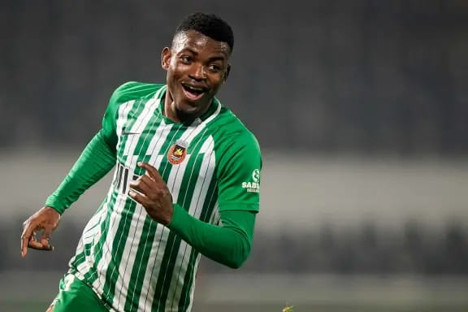

Política
 Governo dos EUA rejeita que drones avistados sejam ameaça estrangeira.
O secretário norte-americano da Segurança Interna, Alejandro Mayorkas, rejeitou, este domingo, que os drones avistados nos céus do nordeste dos Estados Unidos e que causaram alarme entre a população representem uma ameaça estrangeira..
Governo dos EUA rejeita que drones avistados sejam ameaça estrangeira.
O secretário norte-americano da Segurança Interna, Alejandro Mayorkas, rejeitou, este domingo, que os drones avistados nos céus do nordeste dos Estados Unidos e que causaram alarme entre a população representem uma ameaça estrangeira..
 A nova lei de política criminal foi publicada, esta segunda-feira, em Diário da República. Fixa os objetivos, as orientações e as prioridades para o biénio 2023-2025.
Quais são as prioridades da nova lei de política criminal?
Há novidades?
Que crimes deixam de ter investigação prioritária?
Quando é que a lei entra em vigor?
A nova lei de política criminal foi publicada, esta segunda-feira, em Diário da República. Fixa os objetivos, as orientações e as prioridades para o biénio 2023-2025.
Quais são as prioridades da nova lei de política criminal?
Há novidades?
Que crimes deixam de ter investigação prioritária?
Quando é que a lei entra em vigor?
 Villas-Boas quer andebol e hóquei feminino no F. C. Porto
Presidente do F. C. Porto continua em Luanda, onde manifestou a vontade de ter mais duas modalidades no setor feminino.
Villas-Boas quer andebol e hóquei feminino no F. C. Porto
Presidente do F. C. Porto continua em Luanda, onde manifestou a vontade de ter mais duas modalidades no setor feminino.
Detalhes sobre a notícia política...
Notícia 2 sobre política
Mais detalhes sobre outra notícia política...
Esportes
Portugal é sétimo no ranking FIFA e Angola regista a maior subida
Portugal manteve a sétima posição no ranking da FIFA, numa classificação em que Angola tem a maior subida, com a seleção africana a progredir 24 lugares, até ao 93.º posto.
 Villas-Boas quer andebol e hóquei feminino no F. C. Porto
Presidente do F. C. Porto continua em Luanda, onde manifestou a vontade de ter mais duas modalidades no setor feminino.
Villas-Boas quer andebol e hóquei feminino no F. C. Porto
Presidente do F. C. Porto continua em Luanda, onde manifestou a vontade de ter mais duas modalidades no setor feminino.
 Ruben Amorim comenta desejo de Rashford de sair do United
Ruben Amorim, treinador do Manchester United, comentou, nesta quinta-feira, o desejo manifestado esta semana por Marcus Rashford de deixar o clube, após ter falhado o dérbi com o City, no passado fim de semana, por opção técnica. " Se fosse eu provavelmente falaria com o treinador", afirmou o técnico português.
Ruben Amorim comenta desejo de Rashford de sair do United
Ruben Amorim, treinador do Manchester United, comentou, nesta quinta-feira, o desejo manifestado esta semana por Marcus Rashford de deixar o clube, após ter falhado o dérbi com o City, no passado fim de semana, por opção técnica. " Se fosse eu provavelmente falaria com o treinador", afirmou o técnico português.
 Sérgio Conceição deixou de ser hipótese para treinar o Nantes
Sérgio Conceição estava apontado como o sucessor de Antoine Kombouaré, mas as conversações não terminaram em entendimento.
Sérgio Conceição deixou de ser hipótese para treinar o Nantes
Sérgio Conceição estava apontado como o sucessor de Antoine Kombouaré, mas as conversações não terminaram em entendimento.

Os "palancas negras" derrotaram a Namíbia nos oitavos de final da Taça das Nações Africanas (CAN).
Angola assegurou, este sábado, a presença nos quartos de final da CAN, ao conseguir a primeira vitória de sempre de um país lusófono na fase a eliminar da competição.
Detalhes sobre a notícia esportiva...
Notícia 2 sobre esportes
Mais detalhes sobre outra notícia esportiva...
Tecnologia
Notícia 1 sobre tecnologia
Detalhes sobre a notícia tecnológica...
Notícia 2 sobre tecnologia
Mais detalhes sobre outra notícia tecnológica...
Cultura
Notícia 1 sobre cultura
Detalhes sobre a notícia cultural...
Notícia 2 sobre cultura
Mais detalhes sobre outra notícia cultural...